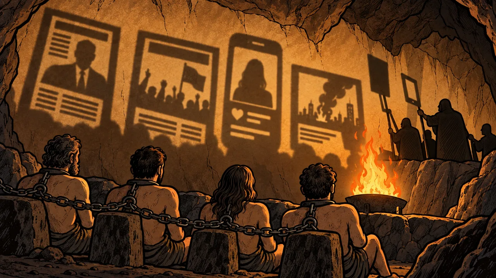
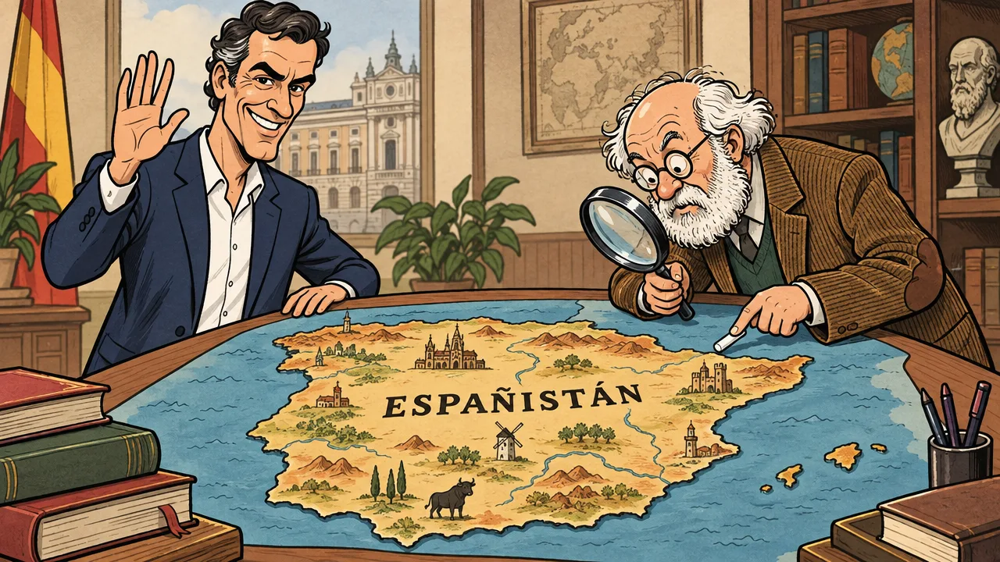

TITULAR
TITULAR
TITULAR
TITULAR

HACE 2.400 AÑOS
PLATÓN
«La República», libro VII
2,6 %
crece la economía
INE, 2025
9,87 %
de paro
INE, EPA
1.221 €
salario mínimo
BOE
101 %
deuda sobre el PIB
Banco de España
PAÍS INVENTADO
ESPAÑISTÁN
Episodio 1 · Sanchís
Datos públicos. Aquí no te decimos a quién votar.